“Hello World!” in ARA
Platform: ARA Computing Server
Resources Required: Any server with compute capabilities
Short Description: The experiment demonstrates reserving an ARA computing resource and launch a container in the reserved node.
Detailed Description: The “Hello World!” experiment in ARA is intended to provide users the first experience of the infrastructure on reserving and accessing a fundamental computing resource. ARA provisions the resources using Docker containers and provides access to the users for executing their experiments.
Detailed Steps for the Experiment
Access the login page and use the credentials to login.
{kind=link}
To reserve an ARA compute resource, we need to create a lease for the resource. Click the Leases option under the Project -> Reservations tab in the dashboard.
{kind=link}
Click on the Create Lease button on the top-right. The user will be redirected to the Create Lease form for specifying the reservation specific attributes.
In the tab General, you need to specify the following attributes:
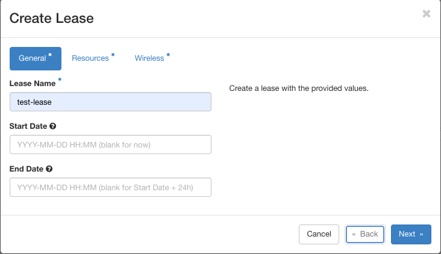Lease Name: User-given name for the lease.
Start Date: The intended date (and time) of start of the lease.
End Date: The intended time for ending the lease.
In the Resources tab, we need to select the following attributes of the resource.
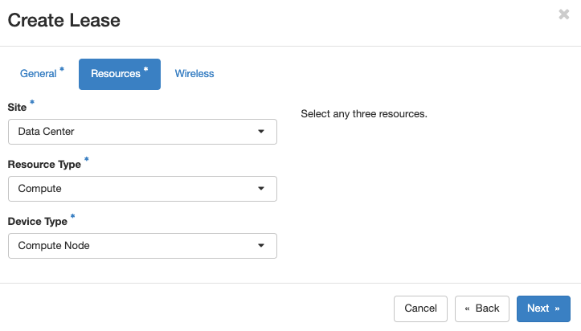Site: The site at which the resource resides. For compute node, we need to select Data Center.
Resource Type: Among the list of available resource types in the drop-down menu, select the Compute type.
Device Type: From the drop-down box, select Compute Node.
The Wireless tab is intended for RAN experiments. For compute nodes, we can ignore the fields in this section.
The created lease will be listed in the page and click on the created lease to see the information. A sample screenshot of a lease is shown below.
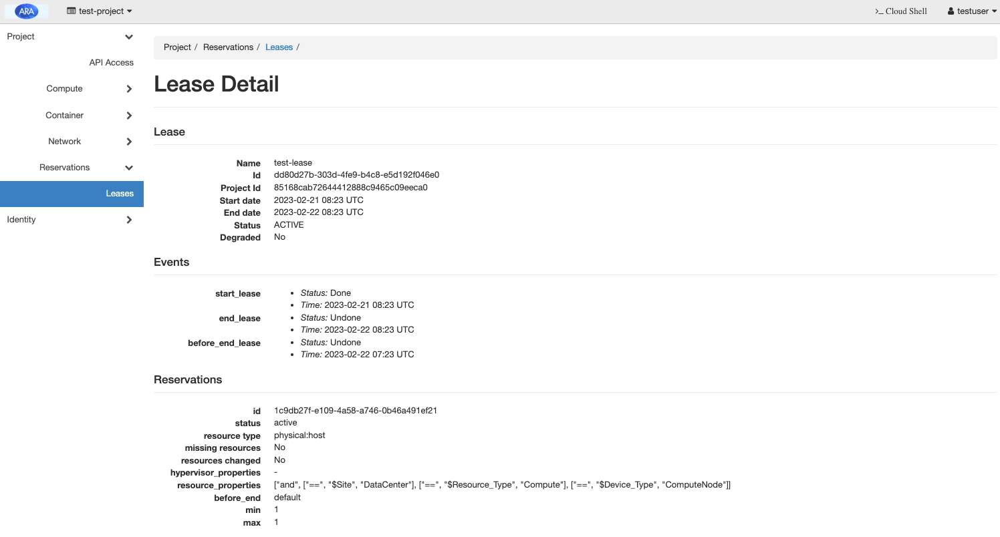
{kind=link}
{kind=link}
{kind=link}
{kind=link}
{kind=link}
Remember to make a note of the id (starting with 1c9d… in the figure above) under the Reservations section since it is required during the container creation.
To create a container, select the Containers tab in the Project -> Container menu from the dashboard as shown in the following figure.
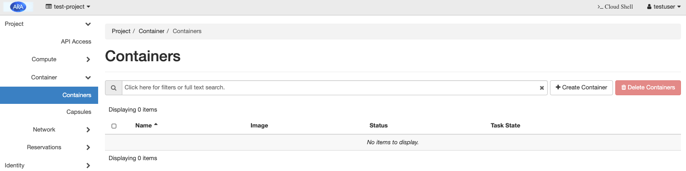Click the Create Container button at the top-right of the page.
In the Info tab, provide the general details of the container. For example:
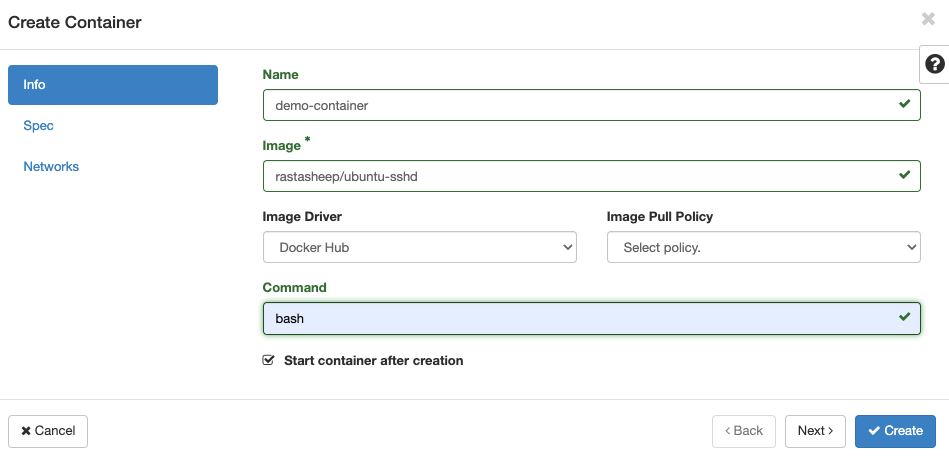Name: Name of the container
Image: Container image, say ubuntu. Please note that a container image built with ssh service is recommended for remote access.
Image Driver: Select the container image source, say Docker Hub (i.e., the image will be pulled from the Docker Hub repository).
Command: Provide the command to run when the container is launched. For example, to get a command line interface, we need to provide bash as the command.
In the Spec tab, you can provide the default values except for the Lease ID field, where you need to provide the ID matching with the reservation ID noted during the lease creation. In this example, the Lease ID should be blazar_1c9d….
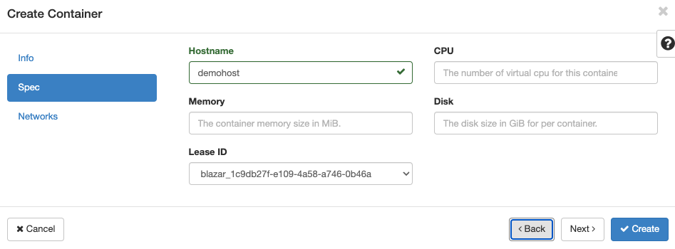In the Networks tab, select the network, which is mandatory for any container creation.
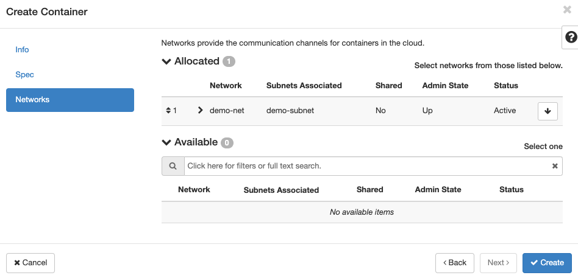Click the Create button for creating the container. The status of created container is as follows:
Clicking on the container shows the properties of the container such as name, host, and IP address.
The Console tab on the top may direct you to the shell of the container where you can run the experiment. Please note that the console may not be available in some browsers due to plugin restrictions. In such cases, the container can be accessed using floating point IPs.
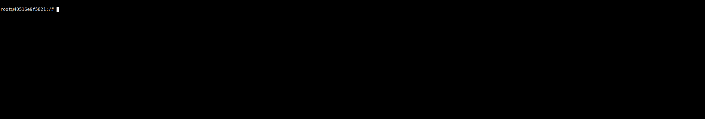
When the container is in the running state, we can assign floating IP address to it. Select Floating IP tab of the Project -> Network menu from the dashboard and click on the Allocate IP to the Project button.
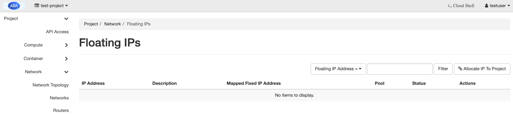In the sub-window as shown below, click and click the Allocate IP button with default settings.
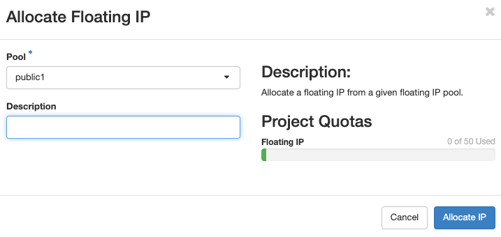The allocation reserves an IP for the project which can be assigned to the container for accessing it from outside. For associating the floating IP to the container, click the Associate button in the following figure.
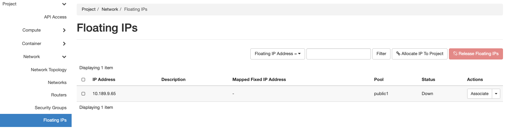In the sub-window as shown below, select the Port to be associated option as the IP address of your container available from the container information.
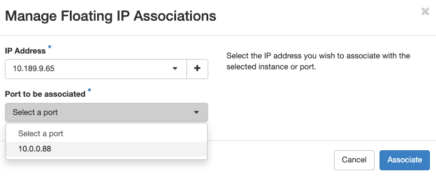When the association is active, we can use the IP to ssh into the controller from the ARA-jumpbox.
First login to the ARA Jumpbox using the username given. For example, for the username johndoe, you can login to the jumpbox using the following command from your computer terminal.
Next login to the container with the floating point IP assigned. For the example, you can use the following command to login to the container.
ssh root@10.189.9.65
{kind=link}
{kind=link}
{kind=link}
{kind=link}
{kind=link}
{kind=link}
{kind=link}
{kind=link}
{kind=link}
{kind=link}
{kind=link}